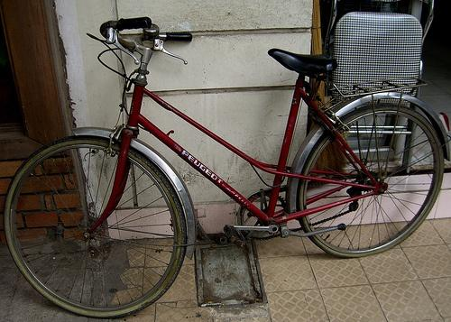
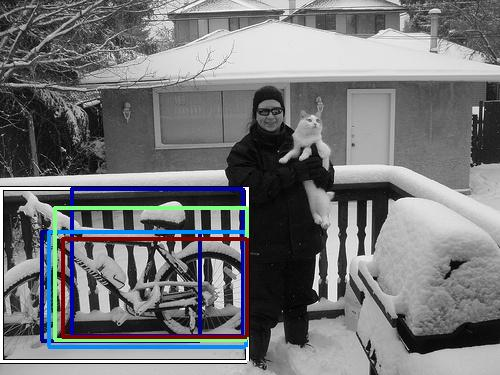
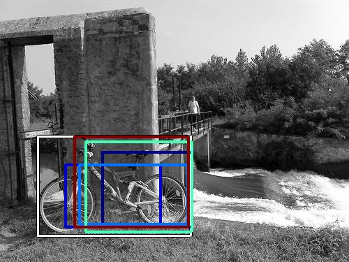
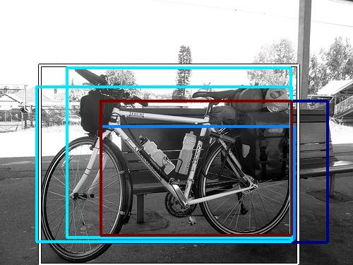

0.479708

0.504778

0.511412

0.548322

0.562418

0.568006
0.568715

0.577412

0.590579

0.605299
| Target image | 0.479708 | 0.504778 | 0.511412 | 0.548322 | 0.562418 | 0.568006 |  0.568715 | 0.577412 | 0.590579 | 0.605299 |
Target image |  16925.142578 |  10684.002930 |  9202.192383 |  9000.932617 |  8520.844727 |  7782.349609 |  7374.753906 |  6822.502441 |  6307.333984 |  6295.530762 |
| Target image  |  14732.128906 |  13041.877930 |  10540.027344 |  9616.993164 |  9278.098633 |  8802.937500 |  8025.185059 |  7368.320312 |  7326.425293 |  7157.162598 |
Target image |  30912.572266 |  18989.451172 |  17909.150391 |  15044.831055 |  12912.713867 |  11547.563477 |  11091.983398 |  10760.450195 |  10356.855469 |  10182.582031 |
Target image |  25836.406250 |  22576.384766 |  17848.796875 |  17297.501953 |  16514.033203 |  14005.953125 |  13188.013672 |  13031.122070 |  12431.532227 |  10503.232422 |